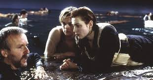

Titanic
Show time : 12:00 - 14:00
Age restriction : 14+
Seventeen-year-old Rose hails from an aristocratic family and is set to be married. When she boards the Titanic, she meets Jack Dawson, an artist, and falls in love with him.

Upper-class Rose (now played by Kate Winslet) boards the ship with her mother (Frances Fisher) and her well-to-do fiancé, Cal (Billy Zane), whom she is marrying for financial reasons. Distraught by the pressure of her arranged marriage, Rose contemplates suicide on the ship’s stern. She is talked down by third-class passenger Jack Dawson (Leonardo DiCaprio), a handsome but penniless artist. Over the course of the voyage, she becomes increasingly attracted to Jack. Meeting in secret, Rose asks him to draw her wearing the Heart of the Ocean necklace, which was a gift from Cal. Rose and Jack subsequently make love, and Rose tells Jack that she will go with him once the ship docks. Later that night, however, they witness the Titanic’s fatal impact with an iceberg.